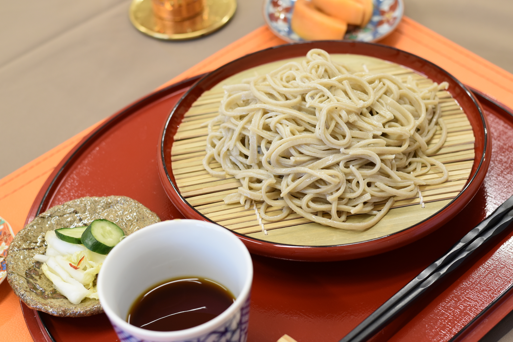

Buckwheat Noodle

Description
Originating in Japan, the dish is a famous traditional food ate
regularly. Usually, a dish would contain a cold noodle, a cold
soup / dressing, and a side dish. This side dish would frequently
be tempura(fried vegetable, meat, or fish), and other times tsukemono.
Ingredient
- 800g Buckwheat Flour
- 200g Cake Flour
- 500ml Water
Steps
- Put in 450ml soba flour and 100g of cake flour together in a big bowl using a siever.
- Get cold 100 ml water and put around ⅘ of the water into the middle of the bowl
- Mix the flour inside the bowl from outside to inside, and be careful to spread the water evenly among the flour
- With the remaining water mix the flour again until it groups up into bigger pieces
- Stick the dough into one big piece
- Knead the dough as you try to take away .the air inside
- Using the rolling pin, start flattening the dough by rolling it from the center, than rotating it 30 degree
- Place the rolling pin in the center of the dough, fold the dough in half, curl the dough around the rolling pin, and roll 3 ~ 4 times to one side
- Do the above for each side
- Use the rolling pin to shape the dough in a square, and to even out the dough’s thickness
- Put flour on half of the dough, fold in half, again put some flour in the middle, and fold the dough from both sides
- Cut the dough evenly and put them in a boiling water
- Take out the noodles in your preferred timing, and place them in a strainer with cold water
Back to Main